Sem a revista
- Troca peça no chute
- Dias sem rodar
- Paga o que disserem

Com a revista
- Testa antes de comprar
- Resolve o simples
- Sabe o que pedir
E aí, parça: acha o defeito antes de trocar peça no chute. Uma página por defeito, com a foto do teste e a rota na ordem certa.
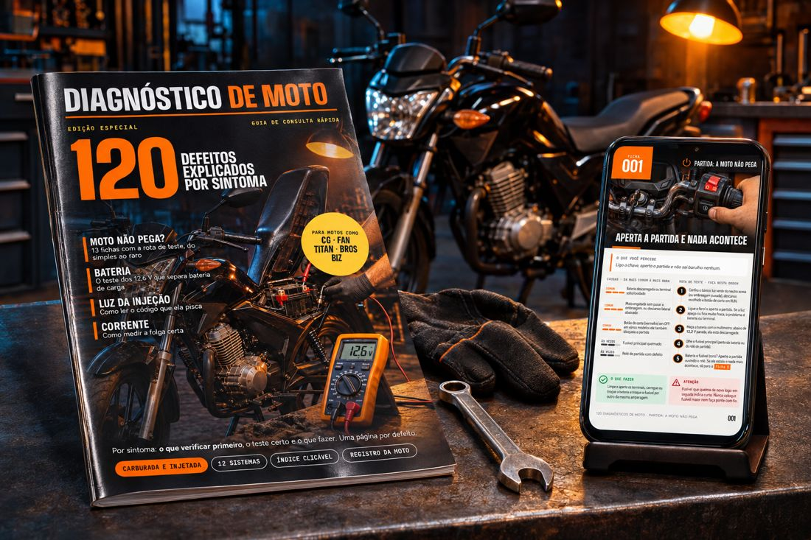
Quero minha revista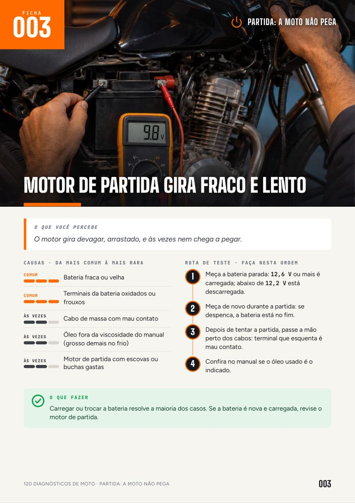
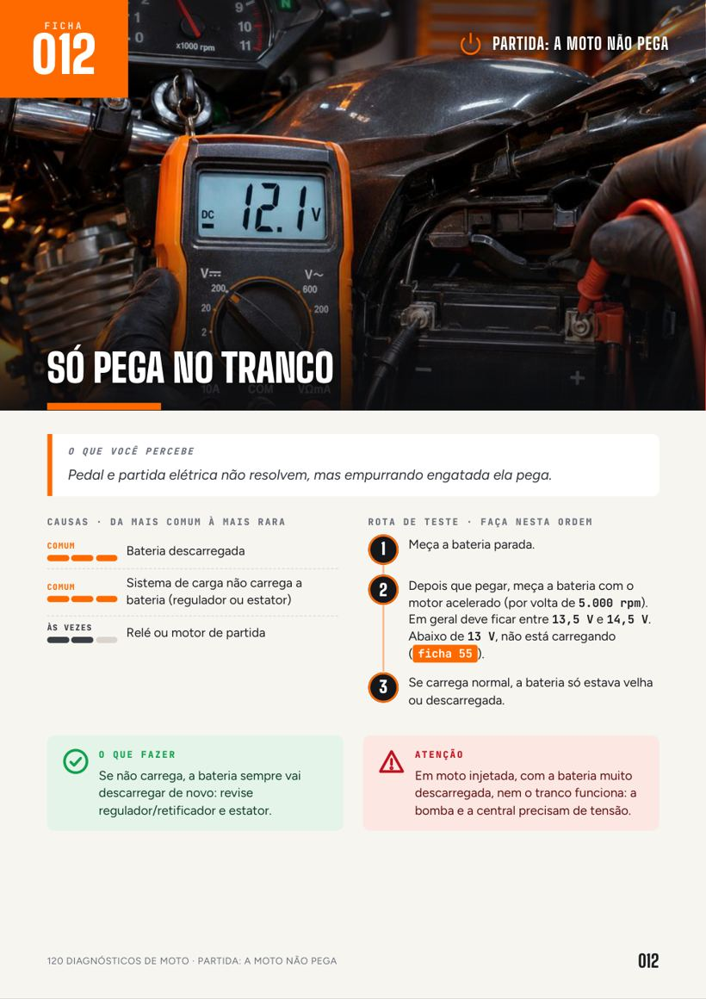
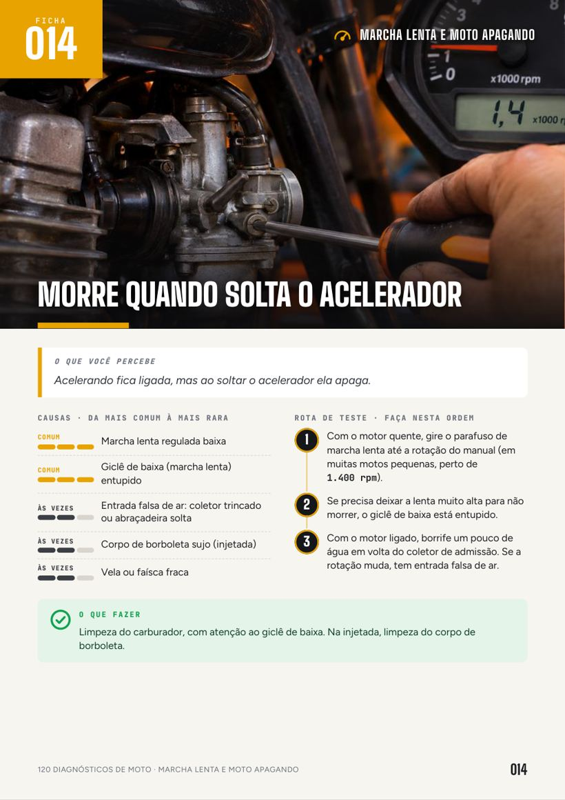
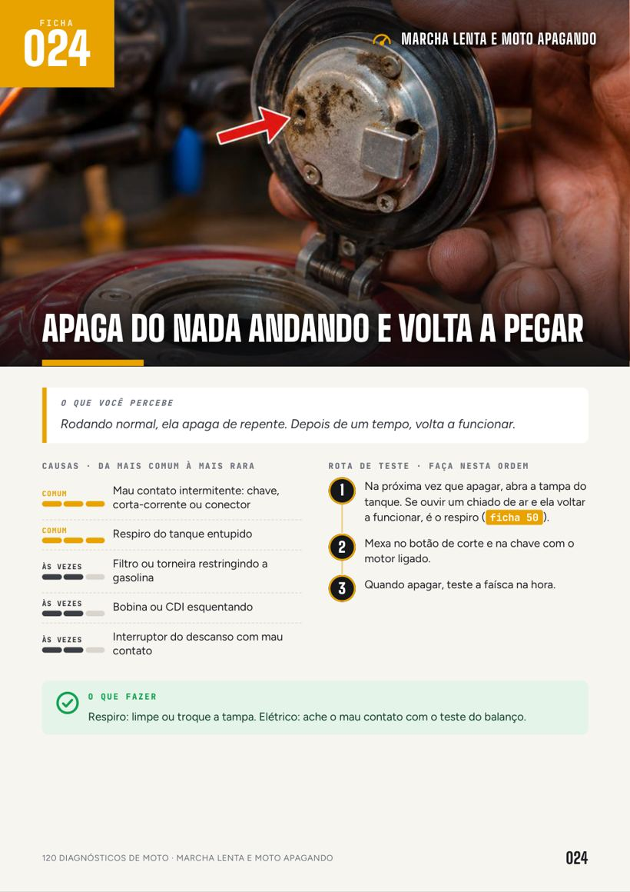
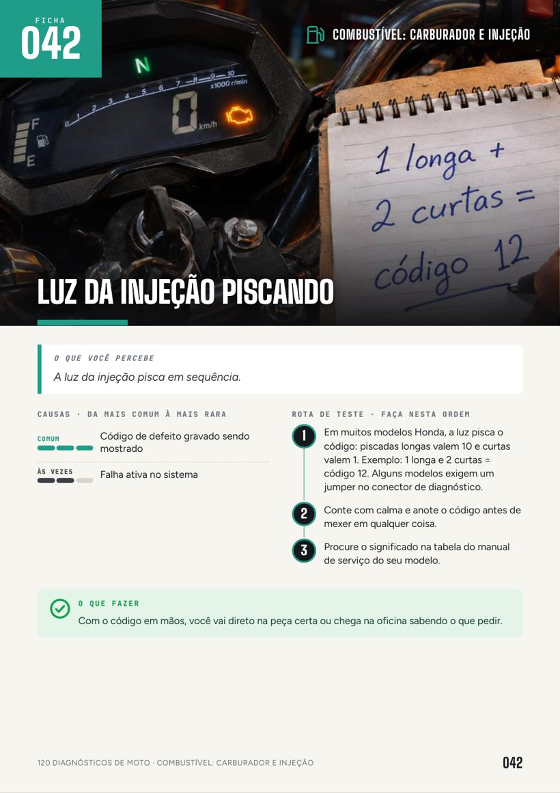
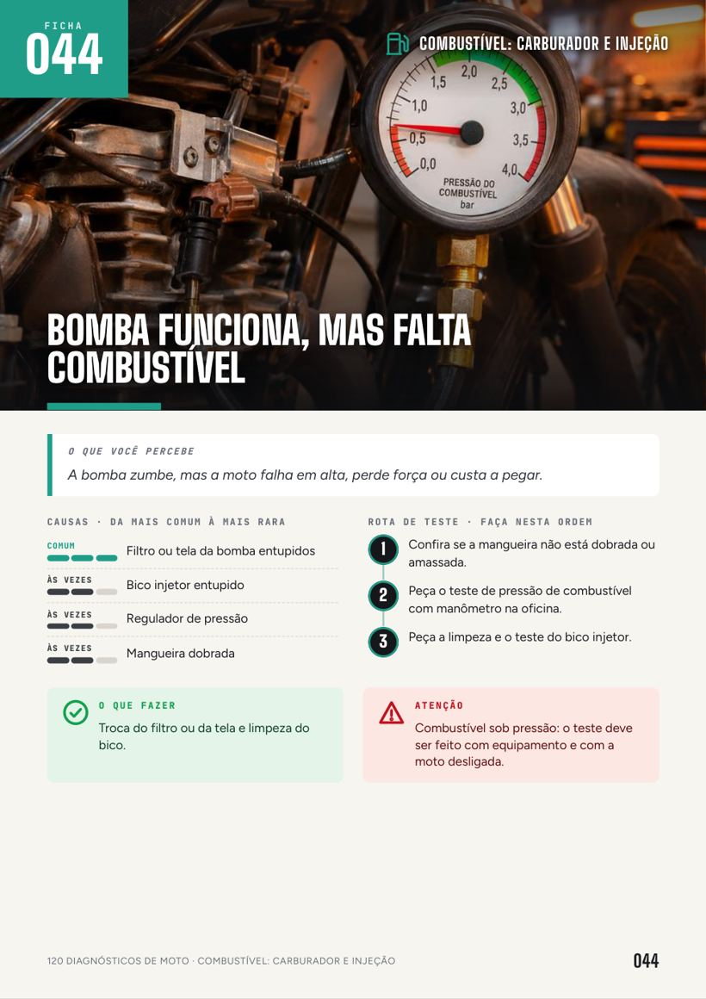
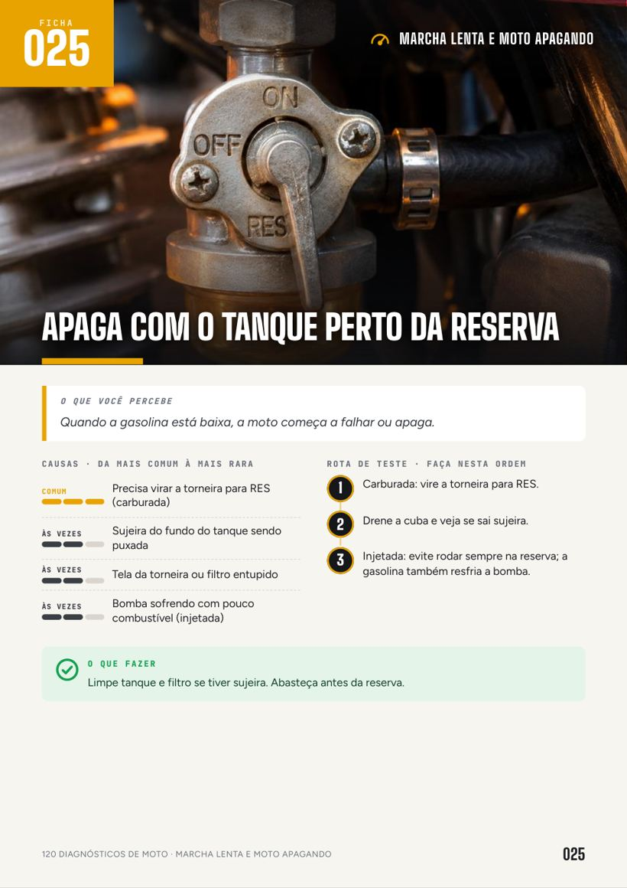
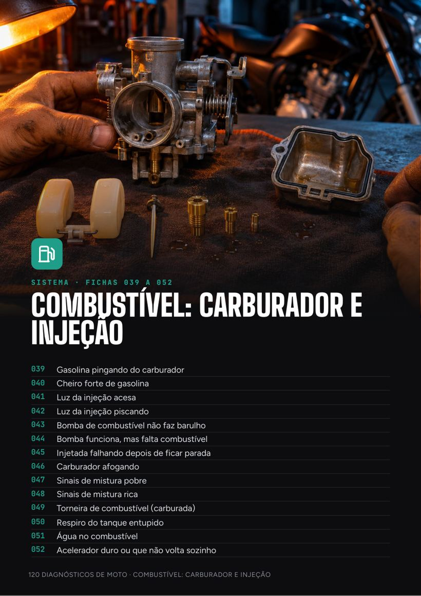
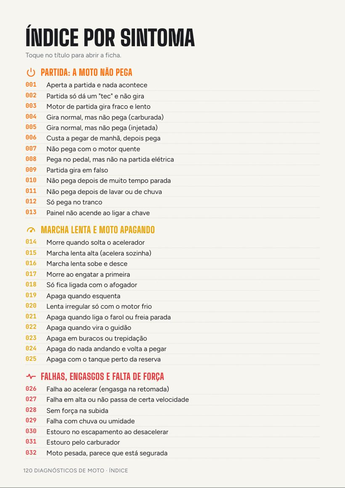
Arrasta pro lado · toca na página pra ampliar
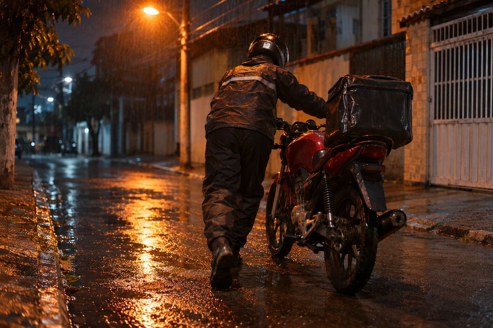
Todo motoboy já passouCê sai pro trampo e, no meio do corre, a moto perde força. Para, liga de novo, anda mais um pouco e morre.
O primeiro palpite é a bobina. Troca, paga, e a falha continua. Aí vem o carburador. Mais um dia sem rodar, mais grana jogada fora.
No fim, podia ser só o respiro do tanque entupido: um furinho na tampa. Tá loko, né? Bastava saber o que olhar primeiro.

Quando um valor muda de modelo para modelo, a ficha avisa para conferir o manual.
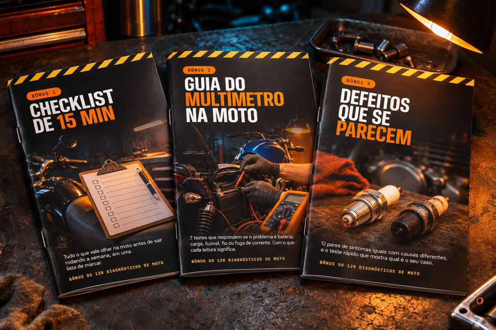
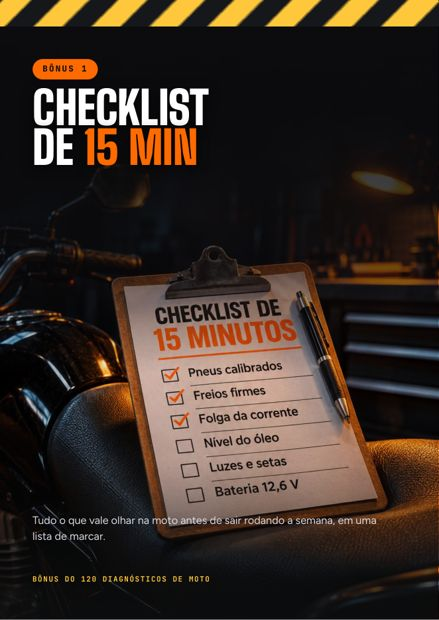
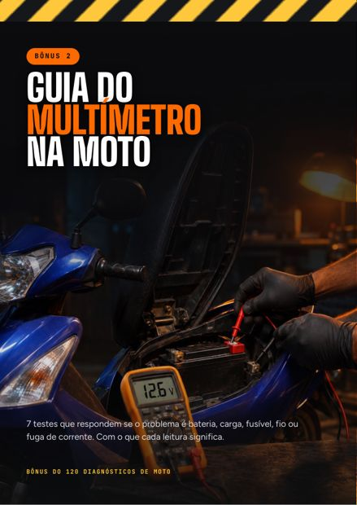
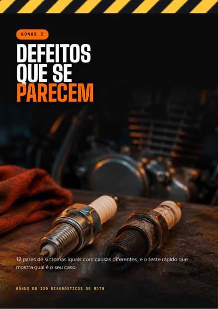

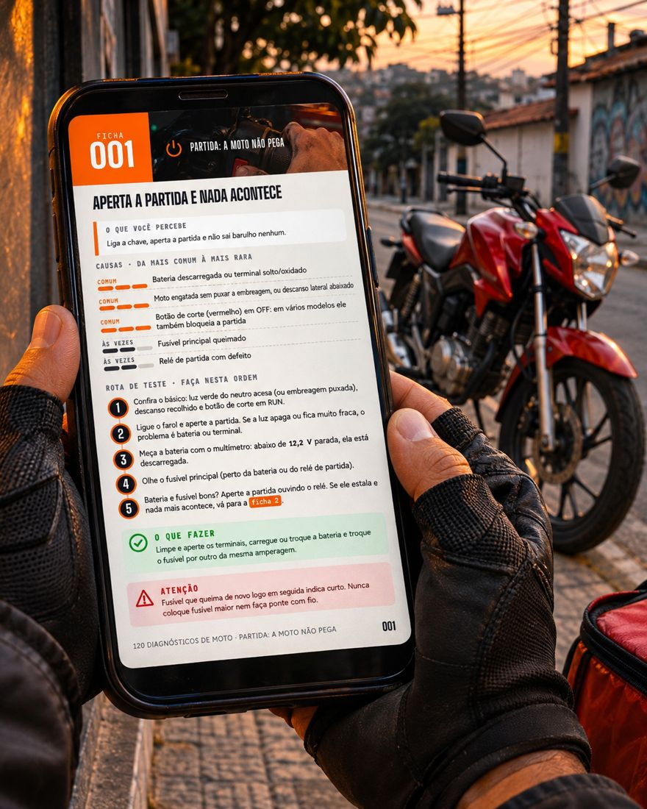
Foi feita para motos de baixa e média cilindrada, carburadas e injetadas, as mais comuns do Brasil, incluindo scooters. Os testes seguem a mesma lógica em quase todas. Quando um valor muda de modelo para modelo, a ficha avisa para conferir o manual.
Não, mano. As fichas são em linguagem simples e começam sempre pelo teste mais fácil. Quando o serviço é de oficina, a ficha fala e cê leva a moto sabendo o que pedir.
Não. É revista digital em PDF. Cê usa no celular, no PC ou imprime.
Assim que o pagamento é aprovado, o acesso chega no seu e-mail. No Pix, a aprovação costuma ser na hora.
Não. A revista mostra o que verificar primeiro e o que é simples de resolver. Freio, combustível sob pressão e motor aberto continuam sendo serviço para quem tem prática, e a ficha avisa quando parar.